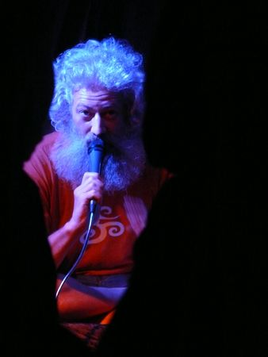

2009-11-02 - ОТЧЁТ О ГАСТРОЛЯХ: ПЕРМЬ, ЕКАТЕРИНБУРГ
Вот, значит, вернулся я в Москву. Буду здесь почти весь ноябрь. В середине месяца съезжу в Беларусь, в конце месяца - в Ростов-на-Дону и дальше по Южной Украине до Одессы. Такие вот дела мне предстоят в ноябре.
А дальше будет рассказ про моё путешествие за Урал и обратно. В нескольких постах, с картинками и комментариями очевидцев, я надеюсь. Кому интересно, загляните под кат, там будет про Пермь и Екатеринбург.
Пермь, "Сейф", 26.09.2009
Позавчера ходил слушать свежие сказки Гайдука в клубе "Сейф". Так как видел Гайдука и слышал его сказки в живую впервые, то кайфанул и подах%ел одновременно. Реальный такой заряд энергии. очень позитивный, кстати =)
(Сергей А. Лазуточкин, Пермь, 28.09.2009
Значит, приехал я в Пермь. Встретил меня Илья - юноша лет двадцати с небольшим, металлический музыкант. Поехали мы в блинную завтракать, а потом к нему на репетиционную точку. И вот мы там сидим, а время уже к пяти часам близится. Говорю ему: Не пора ли уже ехать аппаратуру подключать? А он мне: Рано ещё, концерт начнётся в восемь. К семи подъедем, нормально будет.
А у меня во всей рекламе было написано, что концерт начнётся в шесть. И в СМС-рассылке я написал, что в 18.00 – такие вот дела. И мне уже начинают названивать мои пермские друзья, и спрашивают, будет ли концерт. Афиши-то на дверях заведения нету, и никому ничего не понятно. И я соображаю, что сейчас туда соберутся все, кто про концерт узнал из моей рекламы – и посмотрят на пустую дверь, и разойдутся. Короче, надо уже срочно ехать что-то делать, как-то своё присутствие обозначать.
И вот, приезжаем мы в этот клуб "Сейф". Клуб, вообще-то, танцевальный, но всё, что надо в нём есть. Нету только самой малости – аппаратуры, на которой можно mp3-диски крутить. Но это не беда, музыку можно и с компа запустить, если к пульту его подключить. Проблема только в том, что нету переходника с миниджека на два тюльпана. Илья молодец, примерно за полчаса эту проблему решает. Я тем временем запускаю музыку со своих колонок на батарейках (тех самых, которые с железными стаканами вместо сабвуфера) и тусуюсь между столиками, книжки помаленьку продаю, со всеми по очереди общаюсь. Ничего так, душевно получается.
Примерно в семь музыка в больших колонках уже есть. Начинаем первое отделение концерта (всякий свежак, включая манальскую телегу про Ошо и кислоту). К восьми подтягивается ещё публика. На первом ряду появляются молодые фрики с резиновыми раками, ёжиками и (насколько я помню) с розовым резиновым хуем. Вдохновившись их нестандартным обликом, рассказываю Про Слова и ещё что-то в том же духе. Идёт туговато: я сам по себе, зал сам по себе, контакта между нами нету. Это не радует.
Ладно. Делаю перерыв, выхожу покурить. Вернувшись, застаю тех же фриков уже в новом наряде. Они все надели рясы из мешковины, с капюшонами и верёвочными поясами. И сели на пол, как кающиеся монахи. Я под это дело запускаю блок из Сказок Народов Мира. Опа! есть контакт! И дальше уже всё как надо.
Потом ещё четвертое отделение – там я уже не помню, что рассказывал. Что-то по заказам рассказывал, не помню точно, что именно. Возможно, и пятое отделение было, или какая- то одна финальная сказка, это я тоже сейчас не вспомню. В общем, хорошо посидели. Колонки свои я, кстати, в этом Сейфе забыл. Но вспомнил об этом не сразу, а дня через два, уже в Ебурге.
Дальше еду к Илье, до утра перекантоваться. Там покой и благодать, никакого афтепати, никакого ганджубаса, только пиво и телевизор. Рано утром Илья отвозит меня на вокзал, сажусь в поезд на Ебург. По сути, не поезд, а типа благоустроенной электрички. Но ничего страшного – вагоны тёплые, сидения мягкие, даже поспать удалось.
Екатеринбург, "Шарманка", 27.09.2009
А мы съездили в Екатеринбург. И было там очень тепло, уютно и по–домашнему.
И был там Дима. Светился небесно голубым цветом.
Иногда смотрел пристально в глаза (сквозь объектив).
Иногда Диму фракталило и его становилось много.
И все время он был спокойным, светлым и сказочным.
(bork-bork, Тюмень, 29.09.2009)
В Ебурге встретил меня Антон Alice_Green, веган-сыроед. В машине у него играл очень годный джаз без вокала, прямо хоть сейчас под него сказки рассказывай. Оказалось, что это саундтрек к "Тому и Джерри"; а дома у него такой музыки и на виниле, и на компьютере – слушать не переслушать! До сих пор жалею, что не покопался в этих сокровищах как следует. Но так уж вышло: времени хватило только на то, чтобы перед концертом отоспаться. А потом мы поехали в "Шарманку", а уже оттуда я попал на Семь Ключей, к Датуре и Буче. И у них обитал, пока в Челябинск не уехал.
"Шарманка" оказалась трёхкомнатным подвалом в центре города, не слишком просторным, но очень уютно обустроенным. Старинная мебель, древние саквояжи, даже швейная машинка "Зингер" с ручным приводом – и всего шесть деревянных скамеек для зрителей, человек на сорок в общей сложности. Тем, кто на эти скамейки не попал, меня показывали на большом экране в соседней комнате. Камера, звук и свет к моему приходу уже были настроены. Осталось только тяпнуть коньяку, любезно предложенного хозяевами заведения, переодеться в шорты и тапки, сесть на сцену и рассказывать сказки.

Первые два отделения я построил как в Перми: сперва новые растаманские сказки, потом сказки народов мира, потом продажа книжек. Дальше фигачил уже по заявкам или по наитию – то есть, просто плыл по волне, которая пошла от первых двух отделений. Волна была мощная и тёплая, я чувствовал себя как дома, сказки лились легко и непринуждённо. Под конец до того расслабился, что даже рассказал сказку про Айвана-растамана – а она не то что бы сильно смешная, я её рассказываю только тогда, когда в публике 100% уверен. И сказка реально покатила, я её даже сам по-новому осознал. А на словах "И тут посетил их Джа. Его никто не увидел, но все почувствовали" – все мы действительно что-то такое почувствовали. Ну, по крайней мере, я точно почувствовал.
К тому моменту уже подъехал Датура с женой и двумя детьми – старшему года три, младшая около года. Все они внимательно слушали сказку, даже дети. Дальше, не переодеваясь, поехал я к Датуре на Семь Ключей. По дороге дружной толпой завалили в супермаркет. Присутствовавшие при том случайные екатеринбуржцы оглядели нас удивлённо и спросили: "Давно из Индии?" И правда: глядя на Датуру и его жену, трудно поверить, что они в Индии ещё не бывали. Вот такие они красавцы:
Ну и я, понятно дело, в тапках и шортах, прямо как с пляжа. А погода, между тем, в Ебурге была уже совсем не летняя. Но ничего, я даже не простудился.